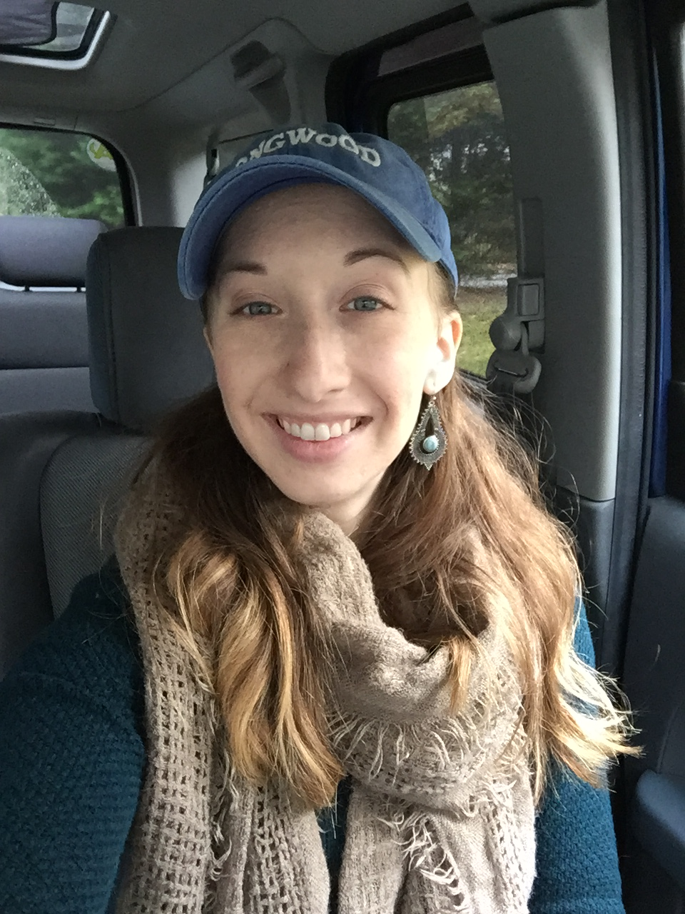

About Me

The Carrie personality cocktail: anthropologist, film preservationist, early bird, amateur chef, computer nerd, and splash of flower child.
Born and raised in Hanover County, VA I have been exposed to many opportunities to learn and explore. All the days and nights of exploring the countryside and reading about ancient civilizations led me to Longwood University where I earned a Bachelors in Anthropology.
It is there I dipped my toe into the tech world, becoming a Resident Technology Associate for 3 years. Being available to over 200 students every day honed my communication, customer service, and critical thinking skills. The love of technology and learning has brought me to where I am now: a junior developer in training.